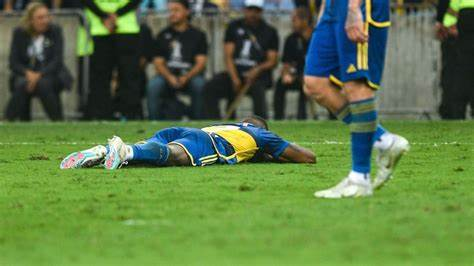
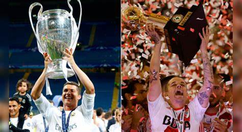
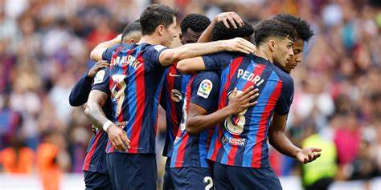
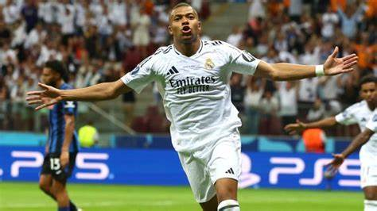

Boca Juniors pierde el liderato en la liga argentina tras caer
ante Newell's Old Boys
Boca Juniors perdió el liderato del Grupo A de la liga argentina
al ser derrotado 2-0 por Newell's Old Boys en la undécima jornada
del torneo Apertura. Los goles de Newell's fueron de Luciano Herrera
y un autogol de Lautaro Di Lollo. Además, Edinson Cavani desaprovechó
un penal para Boca. Con esta derrota, Boca quedó con 23 puntos, uno
menos que el nuevo líder Tigre, quien venció 2-1 a Defensa y Justicia.

Colaboración entre Real Madrid y River Plate:
una alianza estratégica
Real Madrid y River Plate han iniciado una colaboración reciente que fue
destacada durante el partido entre Real Madrid y Leganés, en el que
estuvieron presentes los presidentes de ambos clubes. Jorge Brito,
presidente de River Plate, y Ignacio Villarroel, vicepresidente segundo,
fueron recibidos por Florentino Pérez, mandatario del Real Madrid,
y le entregaron una camiseta de su equipo. Esta relación también
coincide con el interés del Real Madrid en el joven talento de River Plate,
Franco Mastantuono, quien es seguido por varios clubes europeos.

El FC Barcelona establece un récord histórico bajo la dirección de Hansi Flick
El FC Barcelona, bajo la dirección de Hansi Flick, ha alcanzado un impresionante
estado de forma, ganando al Girona 4-1 y posicionándose como líder solitario de
LaLiga, tres puntos por delante del Real Madrid. Este logro se sitúa en una
temporada notable, tras la victoria en la Supercopa de España y sin derrotas
en los tres primeros meses de 2025. Además, el Barça sigue en competencia en la
Copa del Rey y se enfrentará al Borussia Dortmund en los cuartos de final de la
Champions League. Un dato destacado es que el equipo ha marcado 139 goles en 45
partidos, un récord en la historia de LaLiga. Robert Lewandowski, con 25 goles,
es el máximo goleador de la liga, destacando su excepcional rendimiento a los 36 años.

Kylian Mbappé iguala récord de goles en debut con Real Madrid
Kylian Mbappé ha igualado el récord de goles en su primera temporada con
el Real Madrid, alcanzando los 33 tantos que Cristiano Ronaldo y Ruud van
Nistelrooy lograron en sus respectivas temporadas debut. En el partido
contra el Leganés, Mbappé anotó dos goles, incluyendo un penalti y una
jugada de tiro libre, contribuyendo a la victoria por 3-2 del equipo.
Este rendimiento lo coloca como líder en la lucha por el Pichichi de
LaLiga, empatado con Robert Lewandowski.